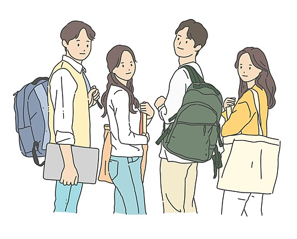

1학년 때는 교양수업이 전공 수업보다 비율이 높습니다. 전공으로 파이썬, C 언어 등과 같은 기초 프로그래밍 언어와 이산
수학, 물리학 과목을 배웁니다. 1학년 때는 대학에서 다루는 프로그래밍 언어를 익혀두면서 네트워크 관리사/리눅스 마스터
같은 자격증을 미리 취득해서 오래전부터 전공에 관심이 있다는 것을 어필 할 준비를 하는것이 좋습니다.

2~3학년에는 객체 지향 프로그래밍 언어들과 운영 체제, 네트워크, 데이터 베이스 등 IT의 전반적인 분야를 학습하게 됩니다.
그러면서 개발자든, 엔지니어든 컴공 취업 분야를 결정하게 됩니다. 이 때 CCNA, LPIC, OCP 등 각 분야에 맞는 국제 자격증을
취득하는 것이 좋습니다. 기트허브 코드들을 업로드하며 관리하고 다양한 알고리즘 문제들을 접해보면서 학술 동아리나
모의 프로젝트부터 공모전 준비까지 다양한 프로젝트를 경험해야 합니다.
IT 분야에 명함이라고 할 수 있는 정보처리 기사 자격증을 취득해야 합니다. 정보처리기사를 비롯해 정보처리자격증들이
2020년도에 개편되어 난이도가 소폭 상승하긴 했지만 열심히 노력해온 컴공생이면 단기에 취득이 가능합니다.
공모전 참여, 자격증 취득, 인턴 및 대외활동 등의 다양한 스펙들을 쌓아서 4학년 1학기부터 취업을 도전 합니다.
조기 취업을 하지 않더라도 졸작(졸업작품)을 만들면서 틈틈이 이력서와 자기소개서를 준비하고 부족한 스펙들을 보완합니다.
취업 스터디를 통해 기업도 분석하고 모의 면접이나 기술 면접을 체험해야 합니다.